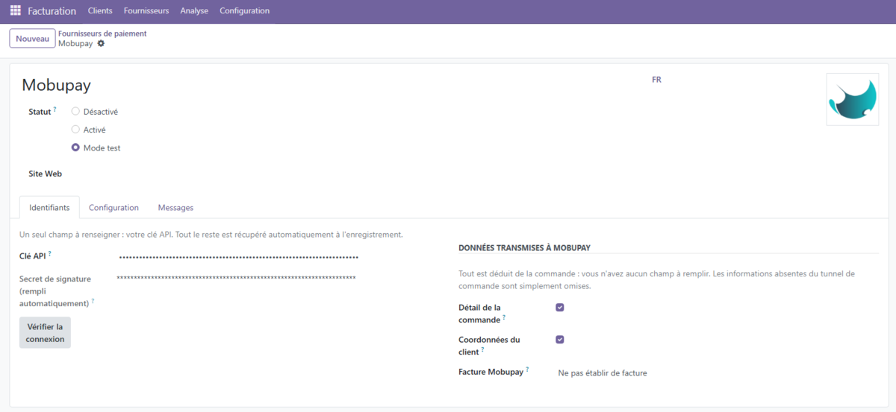
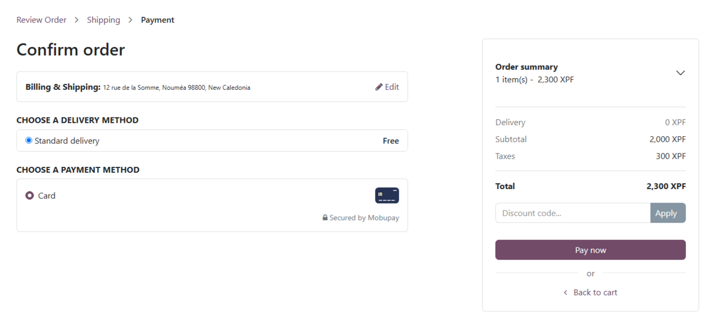

Vous collez votre clé API, vous enregistrez, c'est tout. Le secret de signature des webhooks est récupéré automatiquement, et l'enregistrement vérifie votre clé et vous dit dans quel environnement vous êtes, test ou production.
L'acheteur paie sur une page hébergée sécurisée. Votre commande est mise à jour par un webhook signé, seule source de vérité sur l'issue d'un paiement.
Articles, taxes par ligne avec leur libellé réel, frais de port, remises, et coordonnées du client. Tout est déduit de la commande : vous n'avez aucun champ à remplir. Vos factures Mobupay détaillent donc chaque ligne et portent les mentions obligatoires.
S'il manque une mention obligatoire, le paiement aboutit quand même. La facture est créée en brouillon avec tout le détail de la commande, et elle indique ce qu'il reste à compléter.

Un seul champ à renseigner : votre clé API. Le reste est récupéré automatiquement.

Ce que voit votre client au moment de payer.
Sur Odoo.sh : cliquez sur « Deploy on Odoo.sh » ci-dessus. Odoo ajoute le module au dépôt de votre projet et reconstruit. Installez-le ensuite depuis vos applications.
Si vous hébergez votre Odoo vous-même : téléchargez le module,
placez le dossier mobupay_payment/ dans votre répertoire
addons, redémarrez Odoo, puis
activez le mode développeur (Paramètres, Outils du développeur).
Applications, menu à trois points, « Mettre à jour la liste des applications »,
cherchez « Mobupay » et installez.
Sans le mode développeur, ce menu n'existe pas : c'est la raison la plus
fréquente d'une installation qui semble échouer.
Sur Odoo Online : Odoo Online n'accepte aucun module tiers contenant du code Python, quel qu'il soit et d'où qu'il vienne. Ce module ne peut donc pas y être installé, et la mention « Odoo Online » de l'encadré de disponibilité ci-contre ne s'applique pas à lui. Vous pouvez encaisser par lien de paiement Mobupay, qui fonctionne depuis n'importe quel site, ou migrer votre instance vers Odoo.sh. Écrivez-nous, nous vous orientons.
Comptabilité (ou Site web), Configuration, Fournisseurs de paiement, Mobupay. Un seul champ : votre clé API. Enregistrez, et le module vérifie la clé, récupère le secret de signature et vous confirme l'environnement.
Le module s'installe désactivé : un moyen de paiement ne doit jamais arriver prêt à encaisser. Passez en « Mode test », encaissez un paiement d'essai, puis « Activé ».
Votre instance doit être joignable depuis internet, en HTTPS : Mobupay y livre ses confirmations de paiement. Le bouton « Vérifier la connexion » vous prévient si votre adresse publique ne convient pas.
Ce module transmet des données à Mobupay (mobupay.nc) pour chaque paiement initié. Rien n'est transmis tant qu'aucun paiement n'est lancé.
Les deux options se désactivent depuis la fiche du fournisseur de paiement. Les données de carte ne transitent jamais par votre serveur : le client les saisit sur la page hébergée de Mobupay. Politique de confidentialité.
Mobupay est agent d'eZyness, établissement de monnaie électronique agréé par l'ACPR. Les fonds encaissés sont reversés en XPF sur un compte bancaire local.